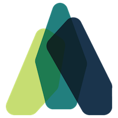

Introduction

Atomist is a powerful automation platform that unifies events across your software development and delivery tools into a cohesive model of code, people, and process. Gain visibility and control over your software delivery flow with automations that respond to commands and events. The Atomist development automation platform provides the tools to make you a more productive developer.
Using Atomist¶
You can use Atomist’s out-of-the-box automations or you can write your own.
Atomist automations¶
Invite the Atomist bot into your Slack team and use the built-in automations. The bot sends you relevant, actionable messages that enable you to control your development flow from Slack, from project creation to deployment to monitoring.
Custom automations¶
You can customize Atomist’s built-in automations or write wholly new ones.
Atomist provides an automation API with integrations for your development tools and runtime platforms, native Slack notifications and commands, and an open source client and command-line interface.
Custom automations can be used to further streamline development:
- Notify team members about events such as pushes, pull requests, build failures, crash looping Kubernetes pods and more.
- Create custom bot commands for fun and profit. Search StackOverflow from Slack or exchange banter with other teams - it’s up to you.
- Automate your release process - rather than delegating it to your build system - so you can release with a single button press in Slack.
- Merge pull requests automatically as soon as the required checks and reviews pass.
- Auto-close issues when a fix is deployed to production.
- Roll back automatically: identify a commit that caused a regression in production, revert the commit, and release the “new” version
Concepts¶
Atomist is all about making you more productive by helping you to automate away all the things that slow you down. The following concepts describe the pieces Atomist provides to make it easy for you to create automations that reduce repetitive work and distractions.
Development automation platform¶
Atomist’s development automation platform is powered by a service that ingests and correlates events from your software development flow. At the heart of the service is a single coherent model: code, people, and processes. You query that model using GraphQL when you write your own automations.
Automation client¶
Automations are written and run within an Atomist automation client, which interacts with the Atomist platform using primarily GraphQL. Each client hosts automations that can be invoked via the Atomist bot, Slack buttons, or when events occur. A client can host any number of automations, and can be hosted wherever the author likes: locally during testing, inside a corporate firewall, or on a public cloud or PaaS.
Commands¶
Commands perform actions when invoked by users sending the Atomist bot messages, clicking buttons in Slack, or running the Atomist CLI.
Examples of commands include the bot command create issue and the
“merge pull request” command that users invoke by pressing a button in
Slack.
Events¶
Events can be sourced from anywhere: commits, pushes, CI builds, deployments, stack traces in production logs, etc. When an event is ingested, Atomist relates it to other events to build up contextual information: a push containing commits triggers a CI build, creating an artifact that gets deployed. Atomist is able to take automated action on any and all of these events along the chain.
How does an automation know what event it should act on? GraphQL subscriptions are used to define the trigger criteria. For example, you can create a subscription to receive an event whenever a Kubernetes deployment results in a pod crash looping, providing an automation that automatically rolls that deployment back and notifies the committers of the failure.
Integrations¶
Atomist receives events from and performs operations on many systems, including version control, CI systems, Slack, and more.
Atomist uses the native integration technology for each platform or tool. For example, to integrate with GitHub and Travis CI, Atomist uses webhooks; to integrate with Slack it uses their native real-time messaging (RTM) API. For each platform Atomist integrates with, it requests the minimal set of permissions required.
If you use a system or tool Atomist does not natively support, you can implement your own integrations. You can use whatever tools and libraries you want to communicate with your systems, and then register these custom event types with Atomist so it can properly connect them with other events.
What next?¶
-
If you’re new to Atomist, visit the Atomist web site to learn more about Atomist and how we can help you and your team deliver better software faster.
-
If you want to get started using Atomist, go to the Using Atomist page to get Atomist installed in your Slack team, authorized in GitHub, and connected to your continuous integration system.
-
If you already are using Atomist and are interested in writing your own automations, you can begin with the Developer Quick Start or go straight to the Developer Guide to learn how to create and run your own automations.